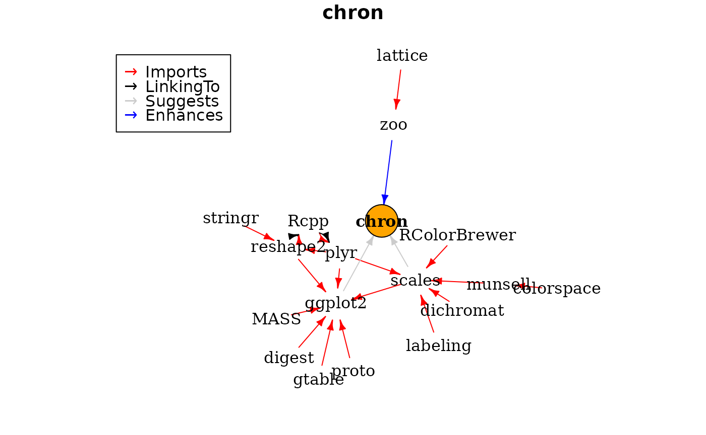
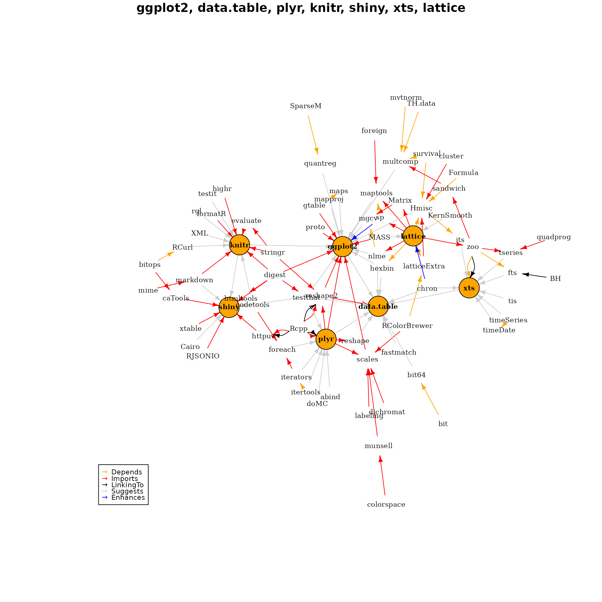

vignettes/miniCRAN-dependency-graph.rmd
miniCRAN-dependency-graph.rmdThe miniCRAN package exposes two functions that provide information about dependencies:
The function pkgDep() returns a character vector with the names of dependencies. Internally, pkgDep() is a wrapper around tools::package_dependencies(), a base R function that, well, tells you about package dependencies. My pkgDep() function is in one way a convenience, but more importantly it sets different defaults (more about this later).
The function makeDepGraph() creates a graph representation of the dependencies.
The package chron neatly illustrates the different roles of Imports, Suggests and Enhances:
chron Imports the base packages graphics and stats. This means that chron internally makes use of graphics and stats and will always load these packages.
chron Suggests the packages scales and ggplot2. This means that chron uses some functions from these packages in examples or in its vignettes. However, these functions are not necessary to use chron
chron Enhances the package zoo, meaning that it adds something to zoo packages. These enhancements are made available to you if you have zoo installed.
The function pkgDep() exposes not only these dependencies, but also all recursive dependencies. In other words, it answers the question which packages need to be installed to satisfy all dependencies of dependencies.
This means that the algorithm is as follows:
Suggests and Enhances, using a non-recursive dependency searchImports, Depends and LinkingTo
The resulting list of packages should then contain the complete list necessary to satisfy all dependencies. In code:
tags <- "chron"
pkgDep(tags, availPkgs = cranJuly2014)## [1] "chron" "RColorBrewer" "dichromat" "munsell" "plyr"
## [6] "labeling" "colorspace" "Rcpp" "digest" "gtable"
## [11] "reshape2" "scales" "proto" "MASS" "stringr"
## [16] "ggplot2"To create an igraph plot of the dependencies, use the function makeDepGraph() and plot the results:
dg <- makeDepGraph(tags, enhances = TRUE, availPkgs = cranJuly2014)
set.seed(1)
plot(dg, legendPosition = c(-1, 1), vertex.size = 20)
Note how the dependencies expand to zoo (enhanced), scales and ggplot (suggested) and then recursively from there to get all the Imports and LinkingTo dependencies.
As a final example, create a dependency graph of seven very popular R packages:
tags <- c("ggplot2", "data.table", "plyr", "knitr", "shiny", "xts", "lattice")
pkgDep(tags, suggests = TRUE, enhances = FALSE, availPkgs = cranJuly2014)## [1] "ggplot2" "data.table" "plyr" "knitr" "shiny"
## [6] "xts" "lattice" "digest" "gtable" "reshape2"
## [11] "scales" "proto" "MASS" "Rcpp" "stringr"
## [16] "RColorBrewer" "dichromat" "munsell" "labeling" "colorspace"
## [21] "evaluate" "formatR" "highr" "markdown" "mime"
## [26] "httpuv" "caTools" "RJSONIO" "xtable" "htmltools"
## [31] "bitops" "zoo" "SparseM" "survival" "Formula"
## [36] "latticeExtra" "cluster" "maps" "sp" "foreign"
## [41] "mvtnorm" "TH.data" "sandwich" "nlme" "Matrix"
## [46] "bit" "codetools" "iterators" "timeDate" "quadprog"
## [51] "Hmisc" "BH" "quantreg" "mapproj" "hexbin"
## [56] "maptools" "multcomp" "testthat" "mgcv" "chron"
## [61] "reshape" "fastmatch" "bit64" "abind" "foreach"
## [66] "doMC" "itertools" "testit" "rgl" "XML"
## [71] "RCurl" "Cairo" "timeSeries" "tseries" "its"
## [76] "fts" "tis" "KernSmooth"
dg <- makeDepGraph(tags, enhances = TRUE, availPkgs = cranJuly2014)
set.seed(1)
plot(dg, legendPosition = c(-1, -1), vertex.size = 10, cex = 0.7)